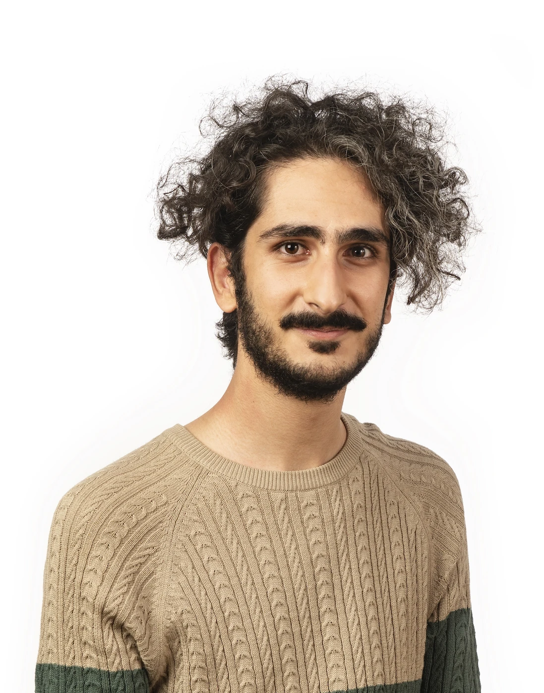

About
I studied Horticultural Sciences and Engineering, with a minor in Biotechnology, at Isfahan University of Technology, where I first became fascinated by the world of plants and their interactions with microbes. My curiosity about plant immunity eventually led me to Norwich, where I joined the Kamoun Lab at The Sainsbury Laboratory (TSL), UK, in 2021 as a pre-doctoral researcher. After almost two wonderful years as a predoc, I began my PhD in the Kamoun Lab in 2023. I finished my PhD in 2026 and am now a Postdoctoral Scientist at TSL.
My research explores the molecular evolution and mechanisms of plant immune receptors. For more about my current projects, please check out the Research tab.
Outside of work, I enjoy arts, design, music, gaming, and ancient mythology.
Timeline
-
2026 – PresentPostdoctoral ScientistKamoun Lab, The Sainsbury Laboratory, Norwich, UK
-
2023 – 2026PhDKamoun Lab, The Sainsbury Laboratory & University of East Anglia, UK
-
2021 – 2023Pre-doctoral ResearcherKamoun Lab, The Sainsbury Laboratory, Norwich, UK
-
2017 – 2021BSc in Horticultural Sciences and EngineeringIsfahan University of Technology, Iran · Minor in Biotechnology